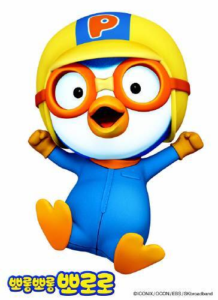

Height: 40 cm Weight: 8 kg
The main character of this work is a curious boy penguin, who wears an airplane pilot's hat and goggles. He lives in a house with a baby dinosaur Crong. He often does not get along with his friends, but soon he gets loose again. He is 8 years old.